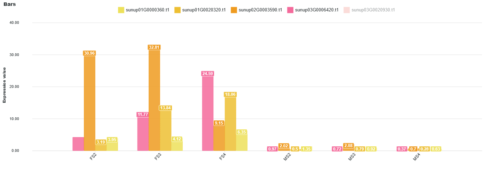
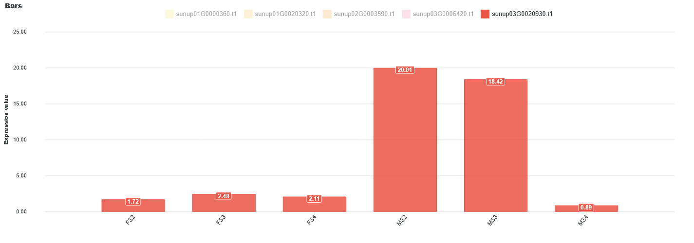
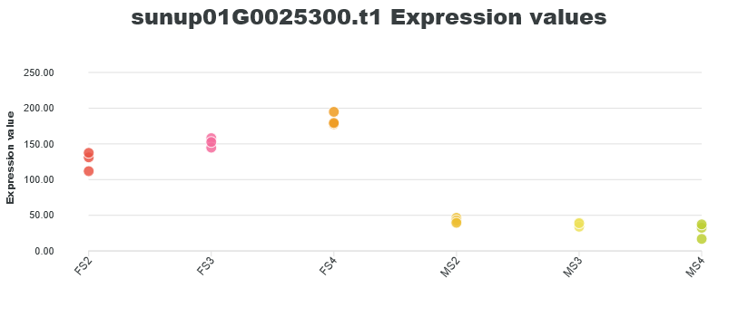

The full thesis PDF linked below is only available in Spanish, the language in which it was written and submitted.
1.Introduction
Papaya is a semi-woody, perennial plant widely distributed across tropical and subtropical regions, with great phenotypic plasticity and notable economic, nutritional and medical importance. Its relatively small genome (371 Mbp, 2n=18) was sequenced from the transgenic "SunUp" variety, resistant to Papaya Ringspot Virus (PRSV) and now the dominant variety in commercial cultivation worldwide.
Despite this relevance, until now there was no genomic portal or public expression atlas specifically focused on this species. Expression atlases allow large-scale transcriptomic data to be integrated, standardized and visualized, making it easier to identify candidate genes and optimize resources in genetic improvement programs — precisely the gap this work addresses.
2.Objectives
The overall goal was to develop a public expression atlas for Carica papaya based on publicly available RNA-Seq data, integrated into a single, freely accessible portal. Specific objectives included: designing a reproducible RNA-Seq pipeline, processing the selected ENA datasets, decontaminating sequences using the Picasso supercomputer (UMA), generating normalized expression matrices, and integrating the results into the IHSM Subtropicals portal.
3.Materials and Methods
8 BioProjects from the ENA were selected (47 samples in total), covering key aspects of
plant physiology: fruit ripening, sexual dimorphism, gynoecium morphogenesis, in vitro
regeneration, and response to water and biotic stress. The bioinformatics pipeline
included quality control (FastQC/MultiQC), read decontamination (Kraken2), read
processing (FastP), alignment against the "SunUp" reference genome (HISAT2),
quantification (featureCounts) and normalization to TPM (R, DGEobj.utils).
The work was carried out both locally and on the Picasso supercomputer at the University
of Málaga.
4.Results
Before publication, the biological consistency of the dataset was validated using dimensionality reduction methods (PCA, MDS, ICA, t-SNE, UMAP), which showed consistent groupings by floral sex and developmental stage. As a real use case, the expression profile of a dataset focused on pistil development was analyzed, identifying differential expression patterns between male and female flowers for genes such as CYC, SUP, HEC2, MUTE, TGA9, AGL11 and CYCD3-1, consistent with the published literature.





5.Conclusions
Key contributions
- First public expression atlas specific to Carica papaya, integrating 47 samples from 8 BioProjects that had previously been scattered across unrelated projects.
- Reproducible bioinformatics pipeline, run both locally and on a supercomputer, applicable to future datasets for the species.
- Robust biological validation through dimensionality reduction and a real use case with candidate genes, reproducing already-published results.
- Published and in production on IHSM Subtropicals DB, with interactive visualizations and annotations cross-referenced with Araport11, SwissProt, TrEMBL, NCBI and InterPro.